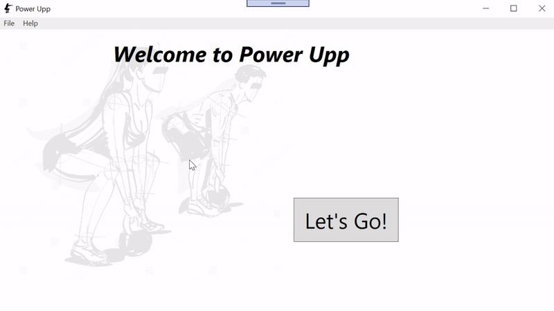
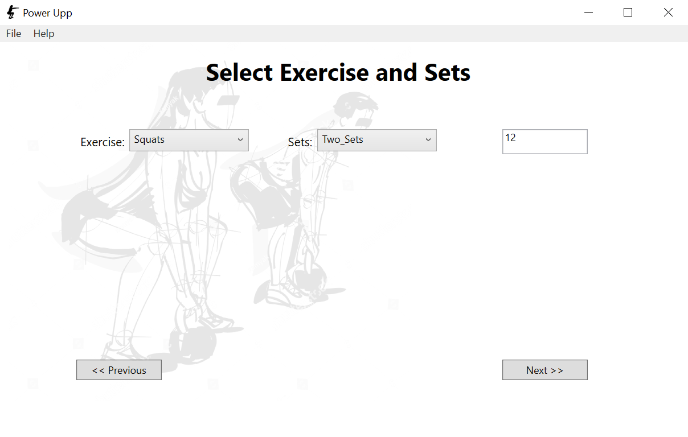
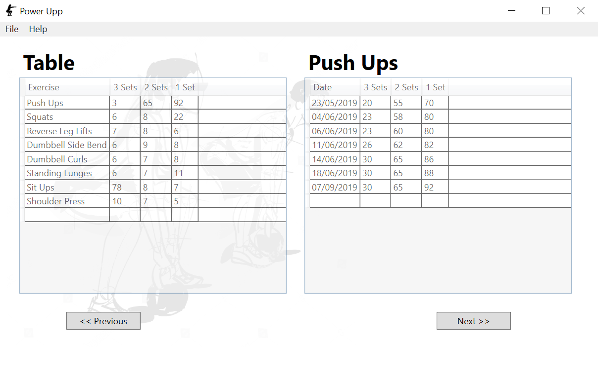
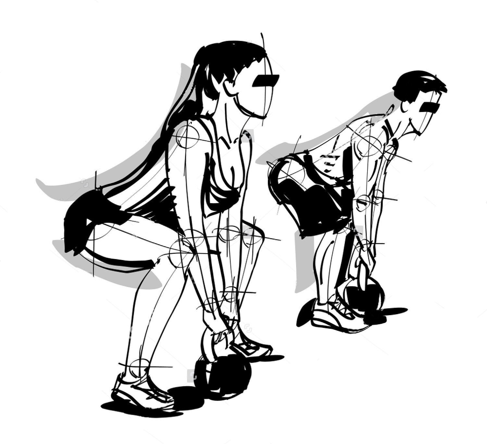
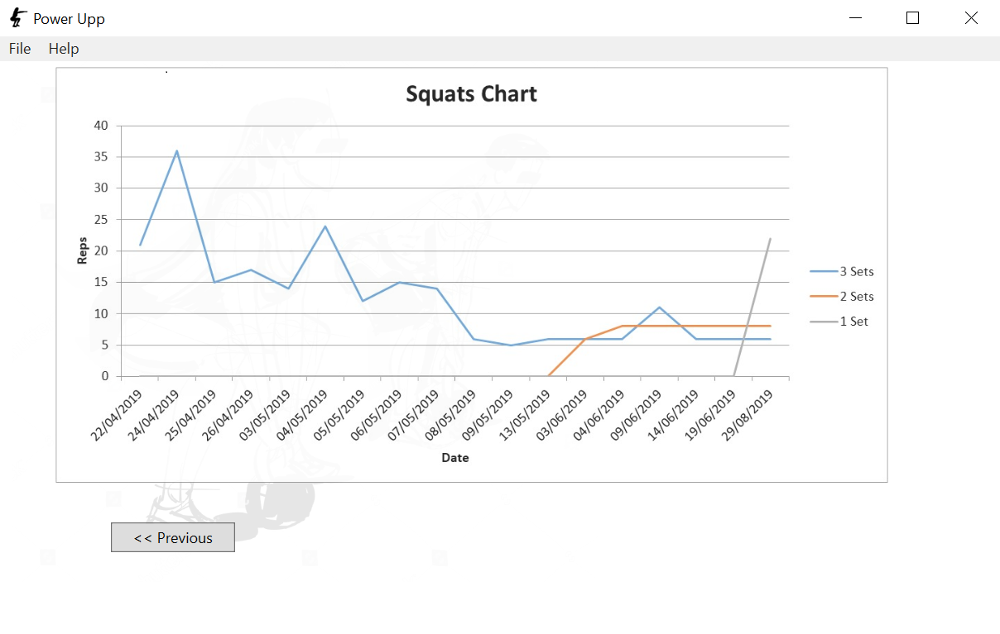

A Windows desktop fitness tracker built in WPF. Log your calisthenics workouts, track sets and reps, and watch your progress rendered as Excel line graphs.





Power Upp is a WPF desktop application aimed at people doing calisthenics or bodyweight training who want to track their weekly progress without signing up for yet another cloud service. Everything runs locally.
The app records exercise type, sets performed, and reps per set. Once you have enough sessions logged, it generates line graphs in Excel using the data, giving you a clear visual of your progress over time, per exercise, per recording date.
The graph generation was the most interesting technical challenge: using the Excel interop library from within .NET to programmatically build charts from workout data. WPF's data binding made the UI layer clean and easy to maintain, with the ViewModel layer handling all business logic.